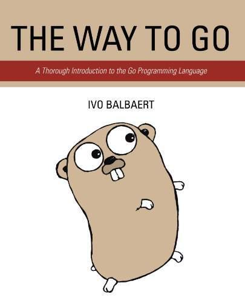
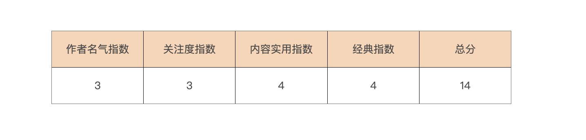
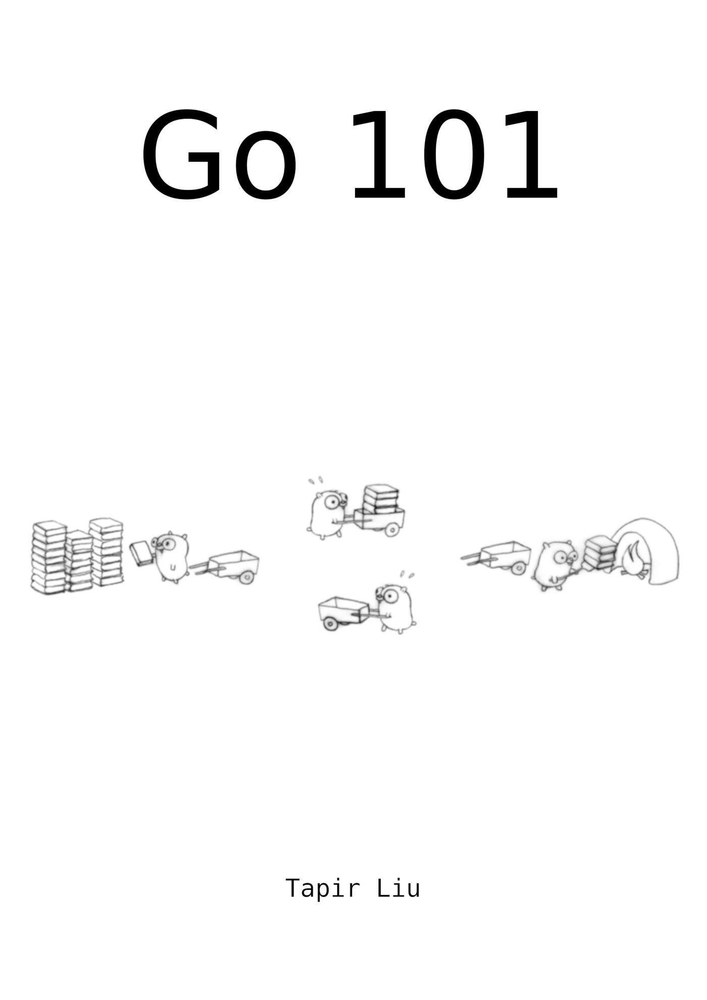
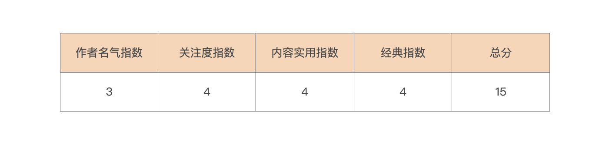
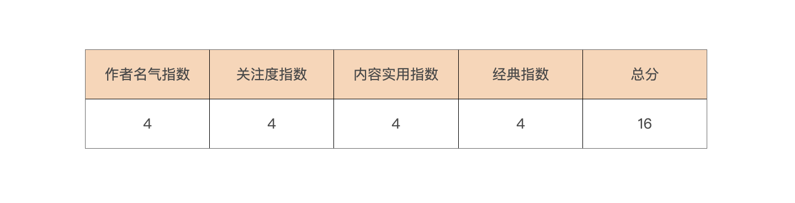
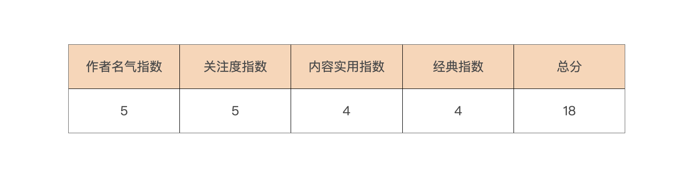
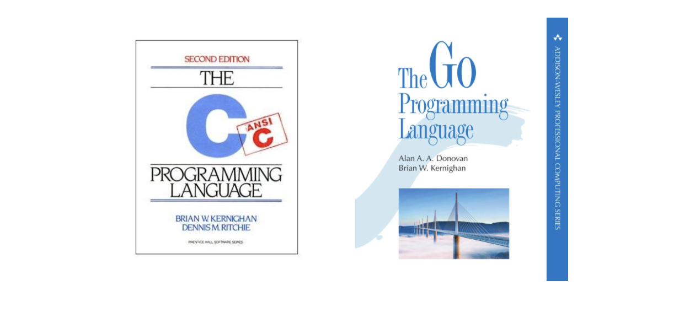
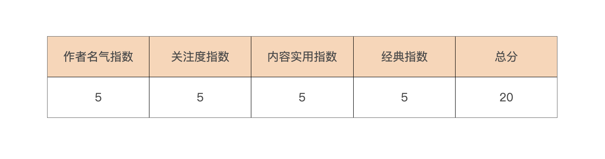
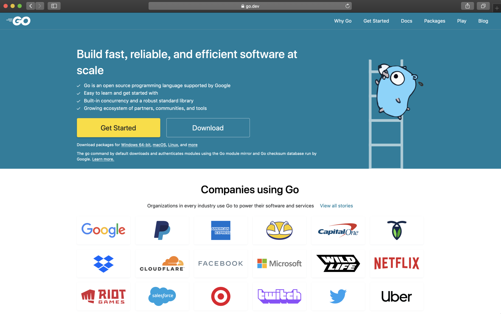

- 00 开篇词 这样入门Go，才能少走弯路.md.html
- 01 前世今生：你不得不了解的Go的历史和现状.md.html
- 02 拒绝“Hello and Bye”：Go语言的设计哲学是怎么一回事？.md.html
- 03 配好环境：选择一种最适合你的Go安装方法.md.html
- 04 初窥门径：一个Go程序的结构是怎样的？.md.html
- 05 标准先行：Go项目的布局标准是什么？.md.html
- 06 构建模式：Go是怎么解决包依赖管理问题的？.md.html
- 07 构建模式：Go Module的6类常规操作.md.html
- 08 入口函数与包初始化：搞清Go程序的执行次序.md.html
- 09 即学即练：构建一个Web服务就是这么简单.md.html
- 10 变量声明：静态语言有别于动态语言的重要特征.md.html
- 11 代码块与作用域：如何保证变量不会被遮蔽？.md.html
- 12 基本数据类型：Go原生支持的数值类型有哪些？.md.html
- 13 基本数据类型：为什么Go要原生支持字符串类型？.md.html
- 14 常量：Go在“常量”设计上的创新有哪些？.md.html
- 15 同构复合类型：从定长数组到变长切片.md.html
- 16 复合数据类型：原生map类型的实现机制是怎样的？.md.html
- 17 复合数据类型：用结构体建立对真实世界的抽象.md.html
- 18 控制结构：if的“快乐路径”原则.md.html
- 19 控制结构：Go的for循环，仅此一种.md.html
- 20 控制结构：Go中的switch语句有哪些变化？.md.html
- 21 函数：请叫我“一等公民”.md.html
- 22 函数：怎么结合多返回值进行错误处理？.md.html
- 23 函数：怎么让函数更简洁健壮？.md.html
- 24 方法：理解“方法”的本质.md.html
- 25 方法：方法集合与如何选择receiver类型？.md.html
- 26 方法：如何用类型嵌入模拟实现“继承”？.md.html
- 27 即学即练：跟踪函数调用链，理解代码更直观.md.html
- 28 接口：接口即契约.md.html
- 29 接口：为什么nil接口不等于nil？.md.html
- 30 接口：Go中最强大的魔法.md.html
- 31 并发：Go的并发方案实现方案是怎样的？.md.html
- 32 并发：聊聊Goroutine调度器的原理.md.html
- 33 并发：小channel中蕴含大智慧.md.html
- 34 并发：如何使用共享变量？.md.html
- 35 即学即练：如何实现一个轻量级线程池？.md.html
- 36 打稳根基：怎么实现一个TCP服务器？（上）.md.html
- 37 代码操练：怎么实现一个TCP服务器？（中）.md.html
- 38 成果优化：怎么实现一个TCP服务器？（下）.md.html
- 39 驯服泛型：了解类型参数.md.html
- 40 驯服泛型：定义泛型约束.md.html
- 41 驯服泛型：明确使用时机.md.html
- 元旦快乐 这是一份暂时停更的声明.md.html
- 加餐 作为Go Module的作者，你应该知道的几件事.md.html
- 加餐 如何拉取私有的Go Module？.md.html
- 加餐 我“私藏”的那些优质且权威的Go语言学习资料.md.html
- 加餐 聊聊Go 1.17版本的那些新特性.md.html
- 加餐 聊聊Go语言的指针.md.html
- 加餐 聊聊最近大热的Go泛型.md.html
- 大咖助阵 叶剑峰：Go语言中常用的那些代码优化点.md.html
- 大咖助阵 大明：Go泛型，泛了，但没有完全泛.md.html
- 大咖助阵 孔令飞：从小白到“老鸟”，我的Go语言进阶之路.md.html
- 大咖助阵 徐祥曦：从销售到分布式存储工程师，我与 Go 的故事.md.html
- 大咖助阵 曹春晖：聊聊 Go 语言的 GC 实现.md.html
- 大咖助阵 海纳：聊聊语言中的类型系统与泛型.md.html
- 期中测试 一起检验下你的学习成果吧.md.html
- 用户故事 罗杰：我的Go语言学习之路.md.html
- 结束语 和你一起迎接Go的黄金十年.md.html
- 结课测试 快来检验下你的学习成果吧！.md.html
- 捐赠
加餐 我“私藏”的那些优质且权威的Go语言学习资料
你好，我是Tony Bai。
学习编程语言并没有捷径，就像我们在开篇词中提到的那样，脑勤+手勤才是正确的学习之路。不过，留言区也一直有同学问我，除了这门课之外，还有什么推荐的Go语言学习资料。今天我们就来聊聊这个话题。
如今随着互联网的高速发展，现在很多同学学习编程语言，已经从技术书籍转向了各种屏幕，以专栏或视频实战课为主，技术书籍等参考资料为辅的学习方式已经成为主流。当然，和传统的、以编程类书籍为主的学习方式相比，谈不上哪种方式更好，只不过它更适合如今快节奏的生活工作状态，更适合碎片化学习占主流的学习形态罢了。
但在编程语言的学习过程中，技术书籍等参考资料依旧是不可或缺的，优秀的参考资料是编程语言学习过程的催化剂，拥有正确的、权威的参考资料可以让你减少反复查找资料所浪费的时间与精力，少走弯路。
这节课我会给你分享下我“私藏”的Go语言学习的参考资料，包括一些经典的技术书籍和其他电子形式的参考资料。
虽然现在编程语言学习可参考的资料形式、种类已经非常丰富了，但技术类书籍（包括电子版）在依旧占据着非常重要的地位。所以，我们就先重点看看在Go语言学习领域，有哪些优秀的书籍值得我们认真阅读。
Go技术书籍
和C（1972年）、C++（1983）、Java（1995）、Python（1991）等编程语言在市面上的书籍数量相比，Go流行于市面（尤其是中国大陆地区）上的图书要少很多。究其原因，可能有以下几个：
首先，我觉得主要原因还是Go语言太年轻了。尽管Go刚刚过完它12岁的生日，但和上面这些语言中“最年轻”的Java语言之间也还有14年的“年龄差”。
其次，Go以品类代名词的身份占据的“领域”还很少。提到Web，人们想到的是Java Spring；提到深度学习、机器学习、人工智能，人们想到的是Python，提到游戏，人们想到的是C++；提到前端，人们想到的是JavaScript。这些语言在这些垂直领域早早以杀手级框架入场，使得它们成为了这一领域的“品类代名词”。
但Go语言诞生晚，入场也较晚。Go虽然通过努力覆盖了一些领域并占据优势地位，比如云原生、API、微服务、区块链，等等，但还不能说已经成为了这些领域的“品类代名词”，因此被垂直领域书籍关联的机会也不像上面那几门语言那么多。
最后是翻译的时间问题。相对于国内，国外关于Go语言的作品要多不少，但引进国外图书资料需要时机以及时间（毕竟要找译者翻译）。
Go在国内真正开始快速流行起来，大致是在2015年第一届GopherChina大会（2015年4月）之后，当时的Go版本是1.4。同一年下半年发布的Go 1.5版本实现了Go的自举，并让GC延迟大幅下降，让Go在国内彻底流行开来。一批又一批程序员成为Gopher，在大厂、初创公司实践着Go语言。但知识和技能的沉淀和总结需要时间。
不过，2020年开始，国内作者出版的Go语言相关书籍已经逐渐多了起来。2022年加入泛型的Go 1.18版本发布后，相信会有更多Gopher加入Go技术书籍的写作行列，在未来3年，国内Go语言技术书籍也会迎来一波高峰。
我个人接触Go语言比较早，几乎把Go语言相关的中外文书籍都通读过一遍，其中几本经典好书甚至还读过不止一遍。所以这里我也会给你推荐几本我认为系统学习Go语言必读的经典好书。说实在的，Go语言比较简单，如果单单从系统掌握这门语言的角度来看，阅读下面这几本书籍就足够了。
这几本书我按作者名气、关注度、内容实用性、经典指数这几个维度，分别打了分（每部分满分为5分，总分的满分为20分），按推荐性从低到高排了序，你可以参考下。
第五名：《The Way To Go》- Go语言百科全书

《The Way To Go》是我早期学习Go语言时最喜欢翻看的一本书。这本书成书于2012年3月，恰逢Go 1.0版本刚刚发布，当时作者承诺书中代码都可以在Go 1.0版本上编译通过并运行。这本书分为4个部分：
- 为什么学习Go以及Go环境安装入门；
- Go语言核心语法；
- Go高级用法（I/O读写、错误处理、单元测试、并发编程、socket与web编程等)；
- Go应用（常见陷阱、语言应用模式、从性能考量的代码编写建议、现实中的Go应用等）。
每部分的每个章节都很精彩，而且这本书也是我目前见到的、最全面详实的、讲解Go语言的书籍了，可以说是Gopher们的第一本“Go百科全书”。
不过遗憾的是，这本书没有中文版。这可能是由于这本书出版太早了，等国内出版社意识到要引进Go语言方面的书籍的时候，这本书使用的Go版本已经太老了。不过，这本书中绝大部分例子依然可以在今天最新的Go编译器下通过编译并运行起来。好在Gopher无闻在GitHub上发起了这本书的中译版项目，如果你感兴趣的话，可以去GitHub上看或下载阅读。
这本书虽然很棒，但毕竟年头“久远”，所以我也只能委屈它一下了，将它列在推荐榜的第五位，这里我也给出了对它的各个指数的评分：

第四名：《Go 101》- Go语言参考手册

《Go 101》是一本在国外人气和关注度比在国内高的中国人编写的英文书，当然它也是有中文版的。
如果只从书名中的101去判断，你很大可能会认为这仅仅是一本讲解Go入门基础的书，但这本书的内容可远远不止入门这么简单。这本书大致可以分为三个部分：
- Go语法基础；
- Go类型系统与运行时实现；
- 以专题（topic）形式阐述的Go特性、技巧与实践模式。
除了第一部分算101范畴，其余两个部分都是Go语言的高级话题，也是我们要精通Go语言必须要掌握的“知识点”。并且，作者结合Go语言规范，对每个知识点的阐述都细致入微，也结合大量示例进行辅助说明。我们知道，C和C++语言在市面上都有一些由语言作者或标准规范委员会成员编写的Annotated或Rationale书籍（语言参考手册或标准解读），而《Go 101》这本书，就可以理解为Go语言的标准解读或参考手册。
Go 101这本书是开源电子书，它的作者也在国外一些支持自出版的服务商那里做了付费数字出版。这就让这本书相对于其他纸板书有着另外一个优势：与时俱进。在作者的不断努力下，这本书的知识点更新基本保持与Go的演化同步，目前书的内容已经覆盖了最新的Go 1.17版本。
这本书的作者是国内资深工程师老貘，他花费三年时间“呕心沥血”完成这本书并且免费奉献给Go社区，值得我们为他点一个大大的赞！近期老貘的两本新书《Go编程优化101》和《Go细节大全101》也将问世，想必也是不可多得的优秀作品。
下面是我对这本书各个指数的评分：

第三名：《Go语言学习笔记》- Go源码剖析与实现原理探索
《Go语言学习笔记》是一本在国内影响力和关注度都很高的作品。一来，它的作者雨痕老师是国内资深工程师，也是2015年第一届GopherChina大会讲师；二来，这部作品的前期版本是以开源电子书的形式分享给国内Go社区的；三来，作者在Go源码剖析方面可谓之条理清晰，细致入微。
2016年《Go语言学习笔记》的纸质版出版，覆盖了当时最新的Go 1.5版本。Go 1.5版本在Go语言演化历史中的分量极高，它不仅实现了Go自举，还让Go GC的延迟下降到绝大多数应用可以将它应用到生产的程度。这本书整体上分为两大部分：
- Go语言详解：以短平快、“堆干货”的风格对Go语言语法做了说明，能用示例说明的，绝不用文字做过多修饰；
- Go源码剖析：这是这本书的精华，也是最受Gopher们关注的部分。这部分对Go运行时神秘的内存分配、垃圾回收、并发调度、channel和defer的实现原理、sync.Pool的实现原理都做了细致的源码剖析与原理总结。
随着Go语言的演化，它的语言和运行时实现一直在不断变化，但Go 1.5版本的实现是后续版本的基础，所以这本书对它的剖析非常值得每位Gopher阅读。从雨痕老师的GitHub上的最新消息来看，他似乎在编写新版Go语言学习笔记。剖析源码的过程是枯燥繁琐的，期待雨痕老师新版Go学习笔记能早日与Gopher们见面。
下面是我对这本书各个指数的评分：

第二名：《Go语言实战》- 实战系列经典之作，紧扣Go语言的精华
Manning出版社出版的“实战系列（xx in action）”一直是程序员心中高质量和经典的代名词。在出版Go语言实战系列书籍方面，这家出版社也是丝毫不敢怠慢，邀请了Go社区知名的三名明星级作者联合撰写。这三位作者分别是：
- 威廉·肯尼迪 (William Kennedy) ，知名Go培训师，培训机构Ardan Labs的联合创始人，“Ultimate Go”培训的策划实施者；
- 布赖恩·克特森 (Brian Ketelsen) ，世界上最知名的Go技术大会GopherCon大会的联合发起人和组织者，GopherAcademy创立者，现微软Azure工程师；
- 埃里克·圣马丁 (Erik St.Martin) ，世界上最知名的Go技术大会GopherCon大会的联合发起人和组织者。
《Go语言实战》这本书并不是大部头，而是薄薄的一本（中文版才200多页），所以你不要期望从本书得到百科全书一样的阅读感。而且，这本书的作者们显然也没有想把它写成面面俱到的作品，而是直击要点，也就是挑出Go语言和其他语言相比与众不同的特点进行着重讲解。这些特点构成了这本书的结构框架：
- 入门：快速上手搭建、编写、运行一个Go程序；
- 语法：数组（作为一个类型而存在）、切片和map；
- Go类型系统的与众不同：方法、接口、嵌入类型；
- Go的拿手好戏：并发及并发模式；
- 标准库常用包：log、marshal/unmarshal、io（Reader和Writer）；
- 原生支持的测试。
读完这本书，你就掌握了Go语言的精髓之处，这也迎合了多数Gopher的内心需求。而且，这本书中文版译者李兆海也是Go圈子里的资深Gopher，翻译质量上乘。
下面是我对这本书各个指数的评分：

第一名：《Go程序设计语言》- 人手一本的Go语言“圣经”
如果说由Brian W. Kernighan和Dennis M. Ritchie联合编写的《The C Programming Language》（也称K&R C）是C程序员（甚至是所有程序员）心目中的“圣经”的话，那么同样由Brian W. Kernighan(K)参与编写的《The Go Programming Language》（也称tgpl）就是Go程序员心目中的“圣经”。

这本书模仿并致敬“The C Programming Language”的经典结构，从一个”hello, world”示例开始带领大家开启Go语言之旅。
第二章程序结构是Go语言这个“游乐园”的向导图。了解它之后，我们就会迫不及待地奔向各个“景点”细致参观。Go语言规范中的所有“景点”在这本书中都覆盖到了，并且由浅入深、循序渐进：从基础数据类型到复合数据类型，从函数、方法到接口，从创新的并发Goroutine到传统的基于共享变量的并发，从包、工具链到测试，从反射到低级编程（unsafe包）。
作者行文十分精炼，字字珠玑，这与《The C Programming Language》的风格保持了高度一致。而且，书中的示例在浅显易懂的同时，又极具实用性，还突出Go语言的特点（比如并发web爬虫、并发非阻塞缓存等）。
读完这本书后，你会有一种爱不释手，马上还要从头再读一遍的感觉，也许这就是“圣经”的魅力吧！
这本书出版于2015年10月26日，也是既当年中旬Go 1.5这个里程碑版本发布后，Go社区的又一重大历史事件！并且Brian W. Kernighan老爷子的影响力让更多程序员加入到Go阵营，这也或多或少促成了Go成为下一个年度，也就是2016年年度TIOBE最佳编程语言。能得到Brian W. Kernighan老爷子青睐的编程语言只有C和Go，这也是Go的幸运。
这本书的另一名作者Alan A. A. Donovan也并非等闲之辈，他是Go核心开发团队的成员，专注于Go工具链方面的开发。
现在唯一遗憾的就是Brian W. Kernighan老爷子年事已高，不知道Go 1.18版本加入泛型语法后，老爷子是否还有精力再更新这本圣经。
这本书的中文版由七牛云团队翻译，总体质量也是不错的。建议Gopher们人手购置一本圣经“供奉”起来！
这里，我对这本书的各个指数都给了满分：

其他形式的参考资料
除了技术书籍之外，Go语言学习资料的形式也呈现出多样化。下面是我个人经常阅读和使用的其他形式的Go参考资料，这里列出来供同学们参考。
Go官方文档
如果你要问什么Go语言资料是最权威的，那莫过于Go官方文档了。
Go语言从诞生那天起，就十分重视项目文档的建设。除了可以在Go官方网站上查看到最新稳定发布版的文档之外，我们还可以在https://tip.golang.org上查看到项目主线分支（master）上最新开发版本的文档。
同时Go还将整个Go项目文档都加入到了Go发行版中，这样开发人员在本地安装Go的同时也拥有了一份完整的Go项目文档。这两年Go核心团队还招聘专人负责Go官方站点的研发，就在不久前，Go团队已经将原Go官方站点golang.org重定向到最新开发的go.dev网站上，新网站首页是这样的：

Go官方文档中的Go语言规范、Go module参考文档、Go命令参考手册、Effective Go、Go标准库包参考手册以及Go常见问答等都是每个Gopher必看的内容。我强烈建议你一定要抽出时间来仔细阅读这些文档。
Go相关博客
在编程语言学习过程中，诞生于Web 2.0时代的博客依旧是开发人员的一个重要参考资料来源。这里我也列出了我个人关注且经常阅读的一些博客，你可以参考一下：
- Go语言官博，Go核心团队关于Go语言的权威发布渠道；
- Go语言之父Rob Pike的个人博客；
- Go核心团队技术负责人Russ Cox的个人博客；
- Go核心开发者Josh Bleecher Snyder的个人博客；
- Go核心团队前成员Jaana Dogan的个人博客；
- Go鼓吹者Dave Cheney的个人博客；
- Go语言培训机构Ardan Labs的博客；
- GoCN社区；
- Go语言百科全书：由欧长坤维护的Go语言百科全书网站。
Go播客
使用播客这种形式作编程语言类相关内容传播的资料并不多，能持续进行下去的就更少了。目前我唯一关注的就是changelog这个技术类播客平台下的Go Time频道。这个频道有几个Go社区知名的Gopher主持，目前已经播出了200多期，每期的嘉宾也都是Go社区的重量级人物，其中也不乏像Go语言之父这样的大神参与。
Go技术演讲
Go技术演讲，也是我们学习Go语言以及基于Go语言的实践的优秀资料来源。关于Go技术演讲，我个人建议以各大洲举办的GopherCon技术大会为主，这些已经基本可以涵盖每年Go语言领域的最新发展。下面我也整理了一些优秀的Go技术演讲资源列表，你可以参考：
- Go官方的技术演讲归档，这个文档我强烈建议你按时间顺序看一下，通过这些Go核心团队的演讲资料，我们可以清晰地了解Go的演化历程；
- GopherCon技术大会，这是Go语言领域规模最大的技术盛会，也是Go官方技术大会；
- GopherCon Europe技术大会；
- GopherConUK技术大会；
- GoLab技术大会；
- Go Devroom@FOSDEM；
- GopherChina技术大会，这是中国大陆地区规模最大的Go语言技术大会，由GoCN社区主办。
Go日报/周刊邮件列表
通过邮件订阅Go语言类日报或周刊，我们也可以获得关于Go语言与Go社区最新鲜的信息。对于国内的Gopher们来说，订阅下面两个邮件列表就足够了：
其他
最后，这里还有两个可能经常被大家忽视的Go参考资料渠道，一个是Go语言项目的官方issue列表。通过这个issue列表，我们可以实时看到Go项目演进状态，及时看到Go社区提交的各种bug。同时，我们通过挖掘该列表，还可以了解某个Go特性的来龙去脉，这对深入理解Go特性很有帮助。
另外一个就是Go项目的代码review站点。通过阅读Go核心团队review代码的过程与评审意见，我们可以看到Go核心团队是如何使用Go进行编码的，能够学习到很多Go编码原则以及地道的Go语言惯用法，对更深入地理解Go语言设计哲学，形成Go语言编程思维有很大帮助。
写在最后
和学习任何一种知识或技能一样，编程语言学习过程中的参考资料不在于多而在于精。在这里，我已经将这些年来我积累的精华Go参考资料都罗列出了。如果你还有什么推荐的资料，也欢迎在留言区补充。
希望你在以专栏为主的Go学习过程中，能充分利用好这些参考资料，让它更好地发挥催化作用，以帮助你更快、更深入地掌握Go语言，形成Go编程思维，写出更为地道的、优秀的Go代码。
© 2019 - 2023 Liangliang Lee. Powered by gin and hexo-theme-book.